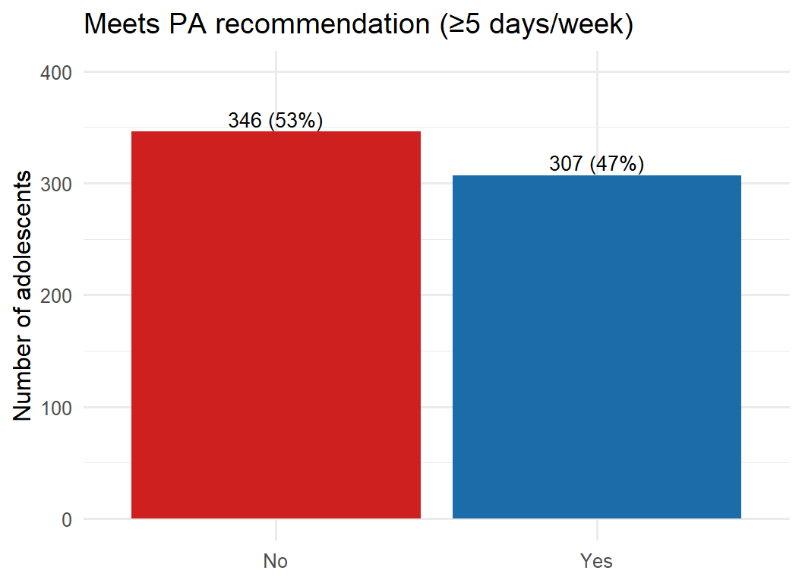
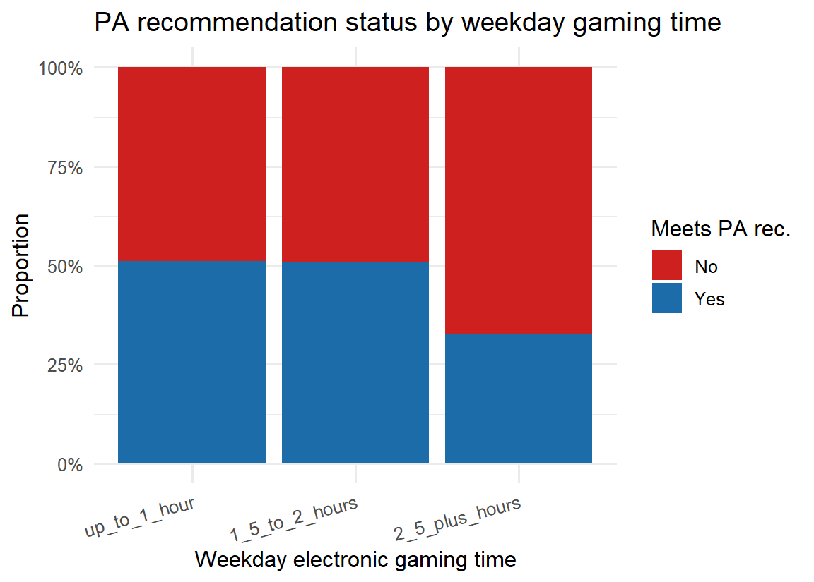
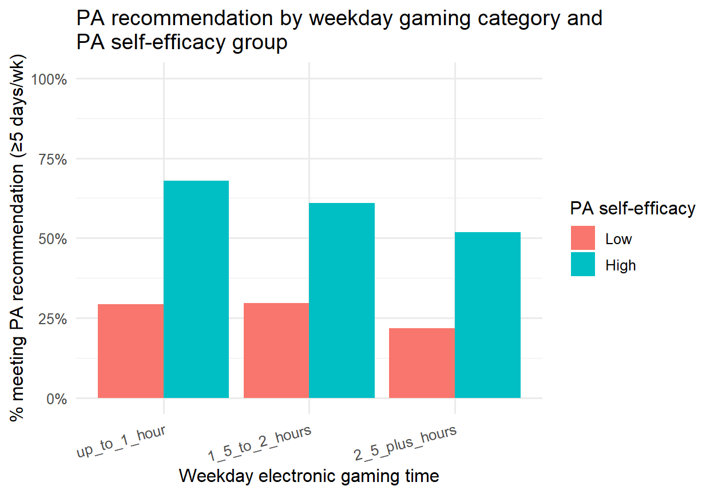
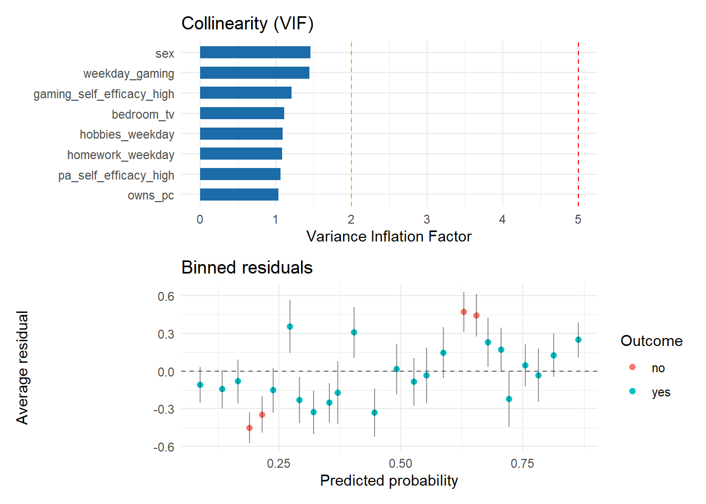
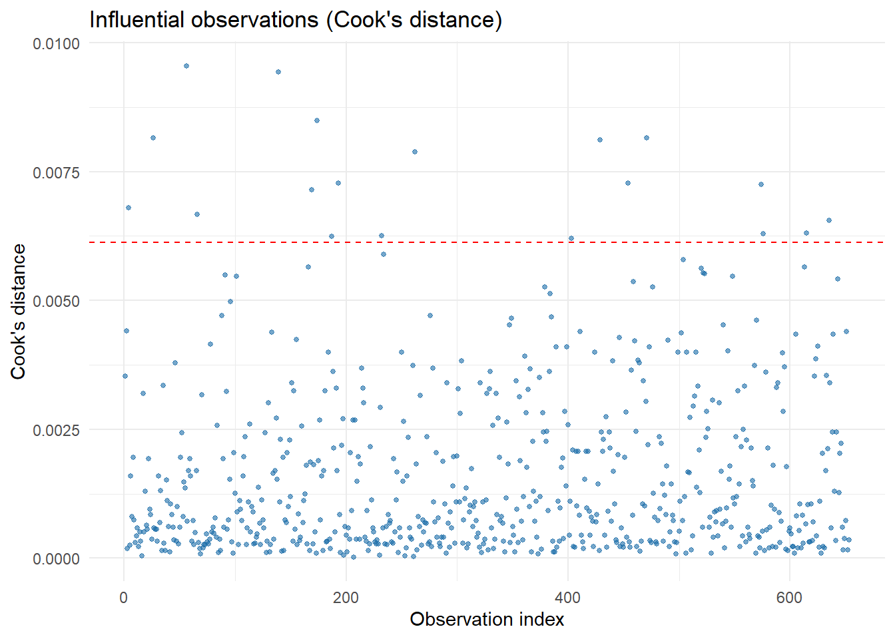

| Characteristic | N = 6531 |
|---|---|
| Meets PA recommendation (≥5 days/week)-outcome | 307 (47%) |
| Sex | |
| boy | 307 (47%) |
| girl | 346 (53%) |
| Weekday electronic gaming time | |
| up_to_1_hour | 395 (60%) |
| 1_5_to_2_hours | 114 (17%) |
| 2_5_plus_hours | 144 (22%) |
| PA self-efficacy | |
| Low | 300 (46%) |
| High | 353 (54%) |
| Gaming self-efficacy | |
| Low | 272 (42%) |
| High | 381 (58%) |
| TV in bedroom | 291 (45%) |
| Owns a personal computer | 518 (79%) |
| Weekday homework time | |
| up_to_30_min | 153 (23%) |
| 1_to_2_hours | 312 (48%) |
| 2_plus_hours | 188 (29%) |
| Weekday hobbies time | |
| up_to_30_min | 295 (45%) |
| 1_to_2_hours | 168 (26%) |
| 2_plus_hours | 190 (29%) |
| 1 n (%) | |
Introduction
Physical activity among adolescents
Regular physical activity (PA) is important for adolescents’ physical and mental health. It supports healthy body weight, strong bones, good fitness and motor skills, and is linked to better mood, self-esteem, and cognitive function (World Health Organization [WHO], 2020). Adolescence is also an important period for developing healthy habits, as physical activity patterns developed during these years can continue into adulthood (WHO, 2020).
In contrast, low levels of PA during adolescence are linked to a higher risk of obesity, type 2 diabetes, cardiovascular disease, and poorer mental wellbeing (WHO, 2020). The WHO recommends that adolescents engage in at least 60 minutes of moderate-to-vigorous PA each day. However, most adolescents worldwide, including those in Norway, do not meet these recommendations (Chortatos et al., 2020). Physical activity also tends to decrease as adolescents progress through secondary school. Therefore, understanding the factors linked to low physical activity and why some adolescents are less active than others is an important public health concern.
Electronic gaming among adolescents
At the same time, many adolescents spend a large part of their leisure time on screen-based activities, especially electronic gaming (Chortatos et al., 2020). Gaming is now common on consoles, computers, tablets, and smartphones and can take up a substantial amount of adolescents’ free time.
Electronic gaming is generally considered a sedentary behaviour because it usually involves sitting for long periods with little physical movement (Tremblay et al., 2017). Since adolescents have limited free time, more time spent gaming may reduce the time available for physical activity. This idea is known as the displacement hypothesis (Cleland & Venn, 2010).
The relationship between gaming and physical activity.
Previous research on the relationship between gaming and PA has produced mixed findings. Some studies report that more gaming is associated with lower physical activity, supporting the idea that gaming may replace time that could otherwise be spent being active (Motl et al., 2006; Marshall et al., 2004). In the ESSENS study, for example, adolescents with lower weekday gaming time had higher odds of meeting PA recommendations than those with high gaming time (aOR = 2.25, 95% CI 1.31–3.85) (Chortatos et al., 2020).
However, other studies have found weak or no significant associations after accounting for factors such as demographic characteristics and other sedentary behaviours (Chortatos et al., 2020). Some evidence also suggests that the relationship may differ by sex, age, or gaming intensity. This suggests that gaming may not affect physical activity in the same way for all adolescents.
These mixed findings point to an important research gap. Instead of asking only whether gaming is associated with physical activity, it may be more useful to ask for whom and under what conditions this association is stronger or weaker. Some adolescents may spend a lot of time gaming but still remain physically active, while others may become less active. Understanding what explains these differences is the focus of the present study.
Self-efficacy
Adolescents may respond differently to the same behaviours or situations. For example, two adolescents may spend a similar amount of time gaming but differ in how physically active they are. Explanation for this difference is self-efficacy.
According to Bandura’s (1997) Social Cognitive Theory, self-efficacy is a person’s belief in their ability to successfully perform a specific behaviour, even when facing difficulties or distractions. In physical activity, self-efficacy refers to an adolescent’s confidence that they can remain physically active, fit activity into their daily routine, and continue being active despite other demands or distractions. Research has consistently linked higher self-efficacy with greater physical activity among adolescents (Rovniak et al., 2002). A recent meta-analysis also identified self-efficacy as an important factor linking social and environmental influences to physical activity among children and adolescents (Lin et al., 2024).
Why Self-Efficacy May Moderate the Gaming-Physical Activity Relationship?
Self-efficacy may not only be related to physical activity, but it may also change the relationship between gaming and physical activity this is called moderation; For example, a student with high self-efficacy may think, I can still exercise even if I spend time gaming. Therefore, they may remain physically active even when they game a lot. On the other hand, a student with low self-efficacy may find it more difficult to stay active when they spend more time gaming.
Therefore, the relationship between gaming and physical activity may be stronger among students with low self-efficacy and weaker among those with high self-efficacy. In other words, the effect of gaming on physical activity may depend on the student’s level of self-efficacy.
The original ESSENS study included self-efficacy as a factor that could affect the relationship between gaming and physical activity, but it did not examine whether self-efficacy changes the strength of this relationship (Chortatos et al., 2020). This is what the present study aims to investigate.
Research question and hypothesis
Research question: Does self-efficacy change the relationship between weekday electronic gaming and physical activity among Norwegian eighth-graders?
Hypothesis: Weekday gaming time will be negatively associated with meeting PA recommendations, with this association attenuated among adolescents with high (vs. low) PA self-efficacy.
Methods
Data Source and Study Population
Data come from the ESSENS study, a cross-sectional survey of Norwegian eighth-graders aged 13–14 years. A total of 742 students from 11 schools completed the questionnaire in 2016. The questionnaire collected information on gaming, other screen-based behaviours, physical activity, and self-efficacy. The individual student was the unit of analysis (Chortatos et al., 2020).
Outcome, Exposure, Moderator, and Covariates
| Variable | Description |
|---|---|
1. active_5plus_days |
Physically active on at least five days in a typical week. |
2. weekday_gaming |
Weekday electronic-gaming time. |
3. pa_self_efficacy_high |
High physical-activity self-efficacy |
4. sex |
Sex of the adolescent. |
5. bedroom_tv |
Television in the bedroom. Categorical variable. |
6. owns_pc |
Owns a personal computer. Categorical variable. |
7. homework_weekday |
Time spent doing homework on weekdays. . |
8. hobbies_weekday |
Time spent on hobbies during weekdays. . |
9. gaming_self_efficacy_high |
High self-efficacy for limiting gaming time . |
Outcome variable
active_5plus_days indicates whether the adolescent achieved at least 60 minutes of physical activity on 5 or more days per week.
- 1 = Yes
- 0 = No
All variables were categorical, so results are presented as counts and percentages.
Exposure and Moderator
The main exposure was weekday_gaming, grouped into:
- Up to 1 hour (reference)
- 1.5–2 hours
- ≥2.5 hours
The moderator was pa_self_efficacy_high, coded as:
- Low (reference)
- High
The moderation effect was tested using the interaction between weekday_gaming and pa_self_efficacy_high.
Reference categories
Reference categories were set as follows: sex (boy), bedroom_tv (no), owns_pc (no), homework_weekday (up to 30 minutes), hobbies_weekday (up to 30 minutes), and gaming_self_efficacy_high (low). Reference categories for all variables were chosen as either the lowest-exposure category or the more common/baseline group, consistent with the reference levels used for the exposure and moderator above.
All other variables in the original dataset were excluded because they were not directly related to the research question (which is specifically about weekday gaming).
Data cleaning and missing data
Two preparation steps were applied before analysis. First, the outcome and the two binary self-efficacy variables-coded 0/1 in the raw file, were recoded to labelled factors ("No"/"Yes" and "Low"/"High"). Second, all categorical predictors were releveled so that the reference category was either the lowest-exposure group (for ordered variables such as gaming time or homework time) or the more common/baseline group (for sex, bedroom_tv, owns_pc)
Missing responses in the raw file were coded as blank strings and converted to NA on import. A complete-case analysis was used: participants with any missing value on the outcome or any of the eight predictors entered in the multivariable model were excluded, reducing the sample from 742 to 653 (88.0%). No imputation was performed.
Model specification
Three regression models were fitted:
- Univariable models: a separate logistic regression of
active_5plus_dayson each candidate predictor, unadjusted for the others, to describe each variable’s crude association with the outcome. - Model A (multivariable, main effects):
active_5plus_days ~ weekday_gaming + pa_self_efficacy_high + gaming_self_efficacy_high + sex + bedroom_tv + owns_pc + homework_weekday + hobbies_weekday
- Model B (secondary analysis, moderation test): Model A plus the
weekday_gaming x pa_self_efficacy_highinteraction term, compared with Model A using a likelihood ratio test (LRT) to formally test the moderation hypothesis.
Results
Descriptive analysis
Table 1: Sample characteristics
The analytic sample was 53% girls, and 22.1% of adolescents reported ≥2.5 hours of weekday electronic gaming. A slight majority (54.1%) reported high PA self-efficacy.
Figure 1: Distribution of the outcome

47% of the analytic sample met the PA recommendation, leaving a near-balanced but majority-inactive outcome-a reasonable base rate for logistic regression (neither outcome category is rare).
Figure 2: Outcome by the key exposure (weekday gaming)

The proportion meeting the PA recommendation drops visibly in the highest gaming category, providing an initial descriptive signal (quantified formally in the univariable model below) that heavier weekday gaming is associated with lower odds of sufficient PA.
Univariable regression results
Table 2: Univariable logistic regression results
| Characteristic | N | OR | 95% CI | p-value |
|---|---|---|---|---|
| Weekday electronic gaming time | 653 | |||
| up_to_1_hour | — | — | ||
| 1_5_to_2_hours | 0.99 | 0.65, 1.50 | >0.9 | |
| 2_5_plus_hours | 0.46 | 0.31, 0.69 | <0.001 | |
| PA self-efficacy | 653 | |||
| Low | — | — | ||
| High | 4.81 | 3.45, 6.75 | <0.001 | |
| Gaming self-efficacy | 653 | |||
| Low | — | — | ||
| High | 1.50 | 1.09, 2.05 | 0.012 | |
| Sex | 653 | |||
| boy | — | — | ||
| girl | 0.54 | 0.40, 0.74 | <0.001 | |
| TV in bedroom | 653 | |||
| no | — | — | ||
| yes | 0.73 | 0.53, 0.99 | 0.044 | |
| Owns a personal computer | 653 | |||
| no | — | — | ||
| yes | 0.98 | 0.67, 1.43 | >0.9 | |
| Weekday homework time | 653 | |||
| up_to_30_min | — | — | ||
| 1_to_2_hours | 1.49 | 1.01, 2.21 | 0.047 | |
| 2_plus_hours | 1.29 | 0.84, 1.99 | 0.2 | |
| Weekday hobbies time | 653 | |||
| up_to_30_min | — | — | ||
| 1_to_2_hours | 0.63 | 0.43, 0.93 | 0.020 | |
| 2_plus_hours | 1.28 | 0.89, 1.84 | 0.2 | |
| Abbreviations: CI = Confidence Interval, OR = Odds Ratio | ||||
Weekday gaming. Adolescents in the highest weekday gaming category (≥2.5 hours) had 0.46 times the odds of meeting the PA recommendation compared with those gaming ≤1 hour/weekday (OR 0.46, 95% CI 0.31-0.69, p<0.001) i.e., roughly 54% lower odds. This is both statistically and practically significant: a near-halving of the odds of meeting activity recommendations is a meaningful effect size in adolescent health research.
PA self-efficacy. High PA self-efficacy was associated with 4.81 times the odds of meeting the PA recommendation compared with low self-efficacy (OR 4.81, 95% CI 3.45-6.75, p<0.001). This is the strongest unadjusted association in the dataset and is clearly of large practical importance-self-efficacy status distinguishes adolescents who are roughly three times more likely to be active than not, versus the reverse pattern among those with low self-efficacy.
Sex. Girls had lower odds of meeting the PA recommendation than boys (OR 0.54, 95% CI 0.4-0.74, p<0.001), consistent with well-documented sex differences in adolescent PA participation; a 46% reduction in odds is a practically relevant gap worth addressing in school-based PA programming.
Bedroom TV. Having a TV in the bedroom was associated with modestly lower odds of meeting the recommendation (OR 0.73, 95% CI 0.53-0.99, p=0.044). The effect size is smaller than for gaming or self-efficacy and sits close to the null at its upper confidence bound, so while statistically significant, its practical importance is more modest and less certain.
Multivariable regression results
Main model (Model A main effects, kept simple)
11 coefficients (8 predictors, several multi-level) were estimated, well above the minimum of three predictors required. Model fit: AIC = 778.1 (residual deviance = 754.1 on 641 df).
Table 3: multivariable characteristics
| Characteristic | OR | 95% CI | p-value |
|---|---|---|---|
| Weekday electronic gaming time | |||
| up_to_1_hour | — | — | |
| 1_5_to_2_hours | 0.62 | 0.37, 1.03 | 0.065 |
| 2_5_plus_hours | 0.42 | 0.25, 0.69 | <0.001 |
| PA self-efficacy | |||
| Low | — | — | |
| High | 4.39 | 3.08, 6.33 | <0.001 |
| Gaming self-efficacy | |||
| Low | — | — | |
| High | 1.40 | 0.95, 2.07 | 0.086 |
| Sex | |||
| boy | — | — | |
| girl | 0.34 | 0.22, 0.51 | <0.001 |
| TV in bedroom | |||
| no | — | — | |
| yes | 0.58 | 0.40, 0.83 | 0.003 |
| Owns a PC | |||
| no | — | — | |
| yes | 1.26 | 0.81, 1.95 | 0.3 |
| Weekday homework time | |||
| up_to_30_min | — | — | |
| 1_to_2_hours | 1.40 | 0.90, 2.18 | 0.14 |
| 2_plus_hours | 1.42 | 0.86, 2.35 | 0.2 |
| Weekday hobbies time | |||
| up_to_30_min | — | — | |
| 1_to_2_hours | 0.48 | 0.30, 0.74 | <0.001 |
| 2_plus_hours | 1.25 | 0.83, 1.90 | 0.3 |
| Abbreviations: CI = Confidence Interval, OR = Odds Ratio | |||
Interpretation of ModelA (holding all other predictors constant).
After adjustment for PA self-efficacy, gaming self-efficacy, sex, bedroom TV ownership, PC ownership, homework time, and hobby time, weekday electronic gaming time was significantly associated with the odds of meeting the PA recommendation. Compared with adolescents who reported gaming for up to 1 hour per weekday, those who gamed for 2.5 hours or more had 58% lower odds of meeting the PA recommendation (adjusted OR = 0.42, 95% CI: 0.25–0.69, p < 0.001). Adolescents gaming for 1.5–2 hours also had lower odds, although this association did not reach statistical significance (adjusted OR = 0.62, 95% CI: 0.37–1.03, p = 0.065).
PA self-efficacy showed the strongest positive association with meeting the PA recommendation. Adolescents with high PA self-efficacy had more than 4 times the odds of meeting the recommendation compared with those with low PA self-efficacy (adjusted OR = 4.39, 95% CI: 3.08–6.33, p < 0.001), independent of gaming time and the other covariates.
In contrast, high gaming self-efficacy was not significantly associated with meeting the PA recommendation after adjustment (adjusted OR = 1.40, 95% CI: 0.95–2.07, p = 0.086).
Sex was also independently associated with meeting the PA recommendation. Girls had 66% lower odds of meeting the recommendation compared with boys (adjusted OR = 0.34, 95% CI: 0.22–0.51, p < 0.001). Similarly, adolescents who had a TV in their bedroom had lower odds of meeting the recommendation than those without a bedroom TV (adjusted OR = 0.58, 95% CI: 0.40–0.83, p = 0.003).
PC ownership and weekday homework time were not significantly associated with meeting the PA recommendation after adjustment. For weekday hobby time, adolescents spending 1–2 hours on hobbies had lower odds of meeting the recommendation compared with those spending up to 30 minutes (adjusted OR = 0.48, 95% CI: 0.30–0.74, p < 0.001), whereas spending 2 hours or more was not significantly associated with the outcome (adjusted OR = 1.25, 95% CI: 0.83–1.90, p = 0.30).
Overall, Model A suggests that higher weekday gaming time, lower PA self-efficacy, being a girl, having a TV in the bedroom, and spending 1–2 hours on hobbies were independently associated with lower odds of meeting the PA recommendation, while high PA self-efficacy was strongly associated with higher odds of meeting the recommendation.
Secondary analysis: testing the moderation hypothesis (Model B)
Model B adds the weekday_gaming × pa_self_efficacy_high interaction to Model A. Model fit: AIC = 782.1 (higher than Model A’s 778.1, indicating the extra complexity was not justified by improved fit).
Likelihood ratio test (Model A vs. Model B): Adding the gaming x PA self-efficacy interaction did not improve model fit Chi-square, degree of freedom 2 = 0.001, and p = 0.999. Both interaction terms were close to zero and were not statistically significant (p > 0.97), providing no evidence that PA self-efficacy moderates the association between weekday electronic gaming time and meeting the PA recommendation. Therefore, the study hypothesis of a moderation effect was not supported, and Model A (main effects only) was retained as the final model.
Comparing univariable and multivariable results
Table 4: Univariable vs. multivariable
| Characteristic |
Unadjusted (Univariable)
|
Adjusted (Model A)
|
|||||
|---|---|---|---|---|---|---|---|
| N | OR | 95% CI | p-value | OR | 95% CI | p-value | |
| Weekday electronic gaming time | 653 | ||||||
| up_to_1_hour | — | — | — | — | |||
| 1_5_to_2_hours | 0.99 | 0.65, 1.50 | >0.9 | 0.62 | 0.37, 1.03 | 0.065 | |
| 2_5_plus_hours | 0.46 | 0.31, 0.69 | <0.001 | 0.42 | 0.25, 0.69 | <0.001 | |
| PA self-efficacy | 653 | ||||||
| Low | — | — | — | — | |||
| High | 4.81 | 3.45, 6.75 | <0.001 | 4.39 | 3.08, 6.33 | <0.001 | |
| Gaming self-efficacy | 653 | ||||||
| Low | — | — | — | — | |||
| High | 1.50 | 1.09, 2.05 | 0.012 | 1.40 | 0.95, 2.07 | 0.086 | |
| Sex | 653 | ||||||
| boy | — | — | — | — | |||
| girl | 0.54 | 0.40, 0.74 | <0.001 | 0.34 | 0.22, 0.51 | <0.001 | |
| TV in bedroom | 653 | ||||||
| no | — | — | — | — | |||
| yes | 0.73 | 0.53, 0.99 | 0.044 | 0.58 | 0.40, 0.83 | 0.003 | |
| Owns a personal computer | 653 | ||||||
| no | — | — | |||||
| yes | 0.98 | 0.67, 1.43 | >0.9 | ||||
| Weekday homework time | 653 | ||||||
| up_to_30_min | — | — | — | — | |||
| 1_to_2_hours | 1.49 | 1.01, 2.21 | 0.047 | 1.40 | 0.90, 2.18 | 0.14 | |
| 2_plus_hours | 1.29 | 0.84, 1.99 | 0.2 | 1.42 | 0.86, 2.35 | 0.2 | |
| Weekday hobbies time | 653 | ||||||
| up_to_30_min | — | — | — | — | |||
| 1_to_2_hours | 0.63 | 0.43, 0.93 | 0.020 | 0.48 | 0.30, 0.74 | <0.001 | |
| 2_plus_hours | 1.28 | 0.89, 1.84 | 0.2 | 1.25 | 0.83, 1.90 | 0.3 | |
| Owns a PC | |||||||
| no | — | — | |||||
| yes | 1.26 | 0.81, 1.95 | 0.3 | ||||
| Abbreviations: CI = Confidence Interval, OR = Odds Ratio | |||||||
This table (Table 4) presents the unadjusted (univariable) and adjusted (Model A) odds ratios, 95% confidence intervals, and p-values for each predictor side by side-weekday gaming, PA self-efficacy, gaming self-efficacy, sex, bedroom TV, PC ownership, and weekday homework and hobby time-allowing direct comparison of each variable’s crude association with meeting the PA recommendation before and after adjusting for the other covariates in the model.

How the main association changed after adjustment. The gaming-PA odds ratio attenuated modestly after adjustment: unadjusted OR = 0.46 vs. adjusted OR = 0.42 for the highest gaming category. The PA self-efficacy association barely moved (unadjusted OR = 4.81 vs. adjusted OR = 4.39).
Which predictors remained associated after mutual adjustment. Weekday gaming (highest category), PA self-efficacy, sex, bedroom TV, and hobbies time all remained statistically significant predictors after adjustment. Gaming self-efficacy and homework time, both marginal or significant unadjusted, were attenuated to non-significance after adjustment; owns_pc was non-significant at both stages.
What might explain the changes. The modest attenuation of the gaming coefficient is consistent with confounding: heavy gamers in this sample are more likely to be boys, more likely to have a bedroom TV, and spend less time on hobbies-all independently associated with lower PA-so part of the crude gaming-PA association reflects these correlated characteristics rather than gaming’s independent effect. The near-total stability of the self-efficacy coefficient indicates it is not confounded by the screen-time/access variables considered here, supporting it as a genuinely independent correlate of PA rather than a proxy for them.
The loss of significance for gaming self-efficacy after adjustment is plausible because it shares conceptual and empirical overlap with weekday_gaming and pa_self_efficacy_high (adolescents confident about limiting gaming tend to also game less and be more broadly self-efficacious), so once those two variables are in the model, gaming self-efficacy adds comparatively little independent information.
Model diagnostics


Collinearity: All generalized VIF values were between 1.04 and 1.46, which are well below the common threshold of 5. This suggests that multicollinearity was not a problem in Model A.
Calibration: The predicted probabilities were reasonably close to the observed proportions across risk groups. This was also supported by the Hosmer–Lemeshow test chi-square, df(8) = 10.89, p = 0.208), which showed no evidence of poor model fit.
Binned residuals: About 85% of the residuals fell within their expected error bounds. Although this is below the commonly used 95% benchmark, the difference was not large and suggests only a mild departure from the expected model pattern.
Influential observations: The largest Cook’s distance was 0.0096, which is well below the usual threshold of 1. Although 19 observations exceeded the more conservative 4/n screening threshold, none had a standardized residual greater than |3|. Therefore, no individual participant appeared to have an excessive influence on the model, and no observations were removed.
Supplementary discrimination: the model showed acceptable discrimination between adolescents who did and did not meet the PA recommendation (AUC = 0.765, 95% CI 0.729-0.802).
Discussion & Limitations
Answer to the research question and hypothesis
This study asked whether PA self-efficacy changes the relationship between weekday electronic gaming and physical activity among Norwegian eighth-graders. The results showed no evidence of a moderation effect (interaction LRT, p = 0.999): adding the interaction between gaming and self-efficacy did not improve the model, and Model B had a higher AIC than Model A.
The hypothesis was therefore partially supported. As expected, higher weekday gaming time was associated with lower odds of meeting the physical activity recommendation, and higher PA self-efficacy was associated with higher odds.
However, the expected moderation was not supported. Self-efficacy did not weaken the negative gaming–physical activity association. Instead, gaming and self-efficacy appeared to be independently, rather than interactively, associated with physical activity: the strength of the gaming–physical activity relationship did not depend on adolescents’ level of self-efficacy.
Changes from univariable to multivariable analysis
The association between gaming and physical activity became weaker after adjusting for sex, bedroom TV, PC ownership, homework, and hobby time. This suggests that these factors explained part of the relationship, although the association remained.
The association between self-efficacy and physical activity changed very little after adjustment, suggesting that self-efficacy was a strong and independent predictor of physical activity in this sample.
Scientific and practical meaning
The findings suggest that gaming and self-efficacy may act as separate factors related to physical activity rather than influencing each other. In practice, improving self-efficacy may help increase physical activity, but this benefit does not appear to depend on how much an adolescent games. Similarly, reducing gaming may be beneficial regardless of the adolescent’s level of self-efficacy.
Limitations
Missing data: About 12% of the original participants were excluded because of missing information. If the missing data were related to the study variables, this could have affected the results.
Model diagnostics: About 85% of the binned residuals were within the expected bounds, which was below the commonly used 95% benchmark. This suggests a mild limitation in model fit, although the other diagnostics were satisfactory.
Limited generalisability: The study focused on eighth-graders from one district in Norway and examined weekday gaming only. Therefore, the findings may not apply to other age groups, populations, or other screen-based activities.
Conclution
This study found that weekday gaming and PA self-efficacy were independently associated with meeting physical activity recommendations, but there was no evidence that self-efficacy changed the relationship between gaming and physical activity.
However, the study cannot conclude that gaming causes lower physical activity or that self-efficacy causes higher physical activity. These relationships should be examined further using longitudinal or experimental studies.
References
- Chortatos, A., Henjum, S., Torheim, L. E., Terragni, L., & Gebremariam, M. K. (2020). Comparing three screen-based sedentary behaviours’ effect upon adolescents’ participation in physical activity: The ESSENS study. PLoS ONE, 15(11), e0241887. https://doi.org/10.1371/journal.pone.0241887 (data source and primary comparator study for this analysis).
- World Health Organization. (2020). WHO guidelines on physical activity and sedentary behaviour. Geneva: WHO.
- Bandura, A. (1997). Self-efficacy: The exercise of control. New York: W.H. Freeman.
- Lin, H., Wang, X., & Li, Y. (2024). A meta-analysis of the relationship between social support, self-efficacy, and physical activity among children and adolescents. Frontiers in Psychology, 15, 1305425. https://doi.org/10.3389/fpsyg.2023.1305425